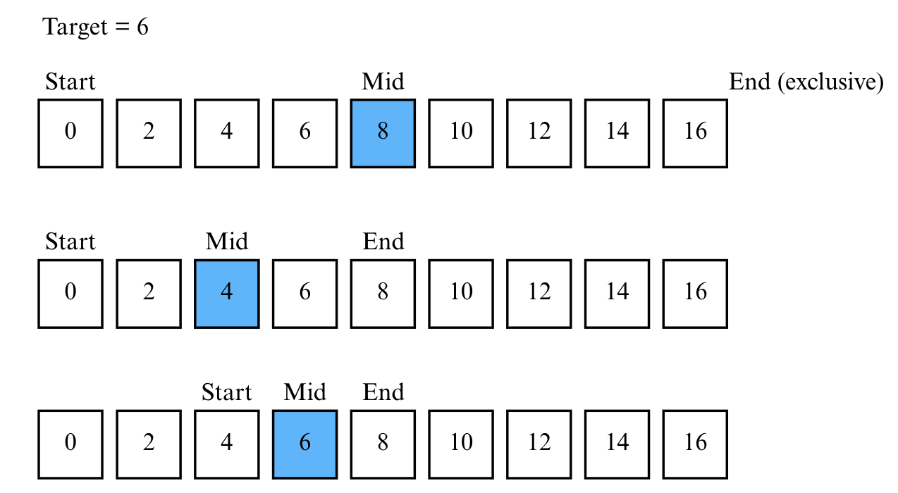
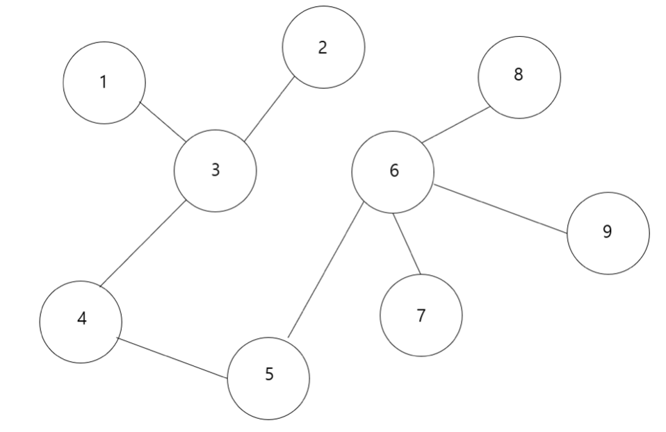
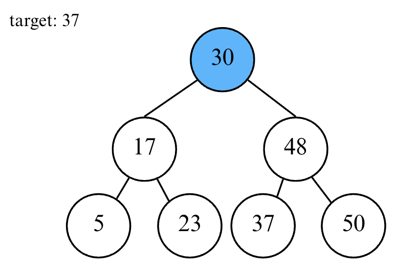
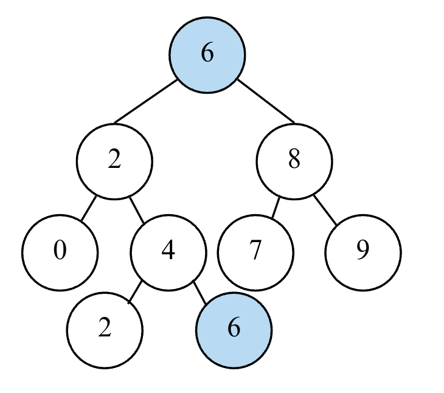

Lecture 7-1. Binary Search#
순차 탐색 (Sequential Search)#
순차 탐색 (Sequential Search) 이란, 리스트 안에 있는 특정한 데이터를 찾기 위해 앞에서부터 데이터를 하나씩 차례대로 확인하는 방법이다. 보통 정렬되지 않은 리스트에서 데이터를 찾아야 할 때 사용한다. 리스트 내에 데이터가 아무리 많아도 시간만 충분하다면 항상 원하는 원소 (데이터)를 찾을 수 있다는 장점이 있다.
source code for sequential search
def sequential_search(n, target, array):
for i in range(n):
if array[i] == target:
return i + 1 # 현재의 위치 반환 (인덱스는 0부터 시작하므로 1 더하기)
print("생성할 원소 개수를 입력한 다음 한 칸 띄고 찾을 문자열을 입력하세요.")
input_data = input().split()
n = int(input_data[0])
target = input_data[1]
print("앞서 적은 원소 개수만큼 문자열을 입력세요. 구분은 띄어쓰기 한 칸으로 합니다.")
array = input().split()
print(sequential_search(n, target, array))
순차 탐색의 특징은 데이터의 정렬 여부와 상관없이 가장 앞에 있는 원소부터 하나씩 확인해야한다는 것이다. 데이터의 개수가 N개 일 때 최대 N번의 비교 연산이 필요하므로 순차 탐색은 최악의 경우 시간 복잡도 O(N)이다.
이진 탐색 (Binary Search)#
이진 탐색은 배열 내부의 데이터가 정렬되어 있어야만 사용할 수 있는 알고리즘이다. 이진 탐색은 탐색 범위를 절반씩 좁혀가며 데이터를 탐색하는 특징이 있다. 이진 탐색은 위치를 나타내는 변수 3개를 사용하는데 탐색하고자 하는 범위의 시작점, 끝점, 그리고 중간점 이다. 찾으려는 데이터와 중간점 (Middle) 위치에 있는 데이터를 반복적으로 비교해서 원하는 데이터를 찾는다.
“이미 정렬된” 9개의 데이터 중에서 값이 6인 원소를 찾는 예시를 살펴보자. 아래 그림에서 중요한 것은 end가 찾는 range에 inclusive한지 exclusive한지이다. 즉 아래의 예시는 [start: end)로 구현했을 때 결과를 보여준다.

데이터의 개수는 9개이지만 총 3번의 탐색으로 원소를 찾을 수 있었다. 이진 탐색은 한 번 확인할때마다 확인하는 원소의 개수가 절반씩 줄어든다는 점에서 시간 복잡도가 O(logN)이다. 코딩 테스트에서 이진 탐색 문제는 탐색 범위가 큰 상황에서의 탐색을 가정하는 문제가 많다. 따라서 탐색 범위가 2,000만을 넘어가면 이진 탐색으로 문제에 접근해보길 바란다.
이진 탐색 구현#
반복문으로 구현한 이진 탐색
반복문으로 구현한 이진 탐색 소스코드 [start:end)
data = [0, 2, 4, 6, 8, 10, 12, 14, 16]
def binary_search(arr, target):
start = 0; end = len(arr)
while start < end:
mid = (start+end)//2
if arr[mid] == target:
return mid # 존재하는 원소의 index 값을 반환
elif arr[mid] < target:
start = mid + 1
else:
end = mid
return -1 # 원소가 존재하지 않는 경우
print(binary_search(data, 4))
반복문으로 구현한 이진 탐색 소스코드 2 - [start:end]
data = [0, 2, 4, 6, 8, 10, 12, 14, 16]
def binary_search(arr, target):
start = 0; end = len(arr) -1 # 다른 부분 1
while start <= end: # 다른 부분 2
mid = (start+end)//2
if arr[mid] == target:
return mid
elif arr[mid] < target:
start = mid + 1
else:
end = mid -1 # 다른 부분 3
return -1 # 원소가 존재하지 않는 경우
print(binary_search(data, 4))
재귀 함수로 구현한 이진 탐색 소스 코드
재귀 함수로 구현한 이진 탐색 소스 코드 [start:end)
data = [0, 2, 4, 6, 8, 10, 12, 14, 16]
def binary_search(arr, start, end, target):
if start >= end:
return -1 # 원소가 존재하지 않음
mid = (start + end) // 2
if arr[mid] == target:
return mid
elif arr[mid] < target:
return binary_search(arr, mid+1, end, target)
else:
return binary_search(arr, start, mid, target)
print(binary_search(data, 0, len(data), 4))
이진 탐색과 비슷한 구현을 할 수 있는 것이 from bisect import bisect_left 함수이다. 이 함수는 특정 target의 위치를 반환하는 것이 아니라, target이 리스트에 존재하지 않더라도 정렬 순서를 유지한 채 삽입될 수 있는 가장 왼쪽(작은) 인덱스 위치를 반환한다는 점에서 차이가 있다.
from bisect import bisect_left
arr = [1, 3, 5, 7, 9]
print(bisect_left(arr, 5)) # 2 (정확히 존재)
print(bisect_left(arr, 6)) # 3 (6이 들어갈 "왼쪽" 위치)
Summary
이진 탐색
조건: 데이터가 정렬되어 있음
구현: start, end, mid 3개의 pointer로 재귀합수 혹은 반복문으로 구현
시간 복잡도: O(logN), 데이터가 많을 때 빠르게 찾아야할 경우 다른 알고리즘과 더불어 사용됨
트리 자료 구조#
이진 탐색은 전제 조건이 데이터 정렬 이다. 실제로 많은 프로그램은 검색 효율을 높이기 위해 데이터를 미리 정렬된 형태로 유지한다. 예를 들어, 검색 기능 (Search)에서 네이버/구글의 자동완성 리스트 내부에선, “사과”, “수박”, “오렌지” 처럼 이미 정렬된 리스트를 유지하고 있다. 검색 효율성을 위해 데이터를 미리 정렬해둔 것이다. 또한 데이터베이트(DB)는 단순 배열이 아니라, B-Tree/B+Tree/Red-Black Tree같은 정렬된 트리 자료구조를 내부적으로 사용하여 이미 정렬된 상태를 유지하므로 이진 탐색과 비슷한 원리로 탐색이 가능하다. 마지막으로 운영체제/파일 시스템에선 파일 이름, inode 테이블, 스케쥴링 큐까지 효율적 접근을 위해 정렬된 리스트나 힙을 유지한다.
트리 자료 구조에 대해 살표보자. (그래프에 대해서는 Lecture 2-1. DFS/BFS 에서 배웠으므로 그래프에 대한 설명은 생략한다.)
아래 그래프를 보자. 만일 그래프에 단 하나의 사이클도 없다면, 해당 그래프는 ‘트리 (Tree)’라고 부른다.
{kind=link}
일반적으로 그래프에서는 정점의 위치나 간선의 모양 등에 대한 조건은 전혀 고려하지 않으며, 오직 연결성만을 고려하므로, 간선의 집합이 변하지 않는다는 가정 하에 그래프를 얼마든지 다시 그릴 수가 있다. 위의 트리에서 5번 정점을 잡고 위로 들어올리는 예시를 생각해보자. 아래쪽에 중력이 작용한다고 생각하고 5번 정점을 위쪽으로 들어올리게 되면 트리의 모양은 아래와 같이 변할 것이다.
{kind=link}
트리에는 루트 (root)가 있을 수도 없을 수도 있지만, 편의를 위해서 아무 정점이나 루트로 선택할 수 있다. 트리는 항상 루트를 기준으로 다시 그릴 수 있기 때문에, 루트가 고정되지 않는 한 어떤 정점이 ‘위에’ 있는지 판정할 수 없다. 하지만 루트가 고정된다면, 우리는 정점 간에 ‘부모’와 ‘자식’의 관계를 정의할 수 있다.
용어 정리
root: 트리의 가장 위에 있는 정점(node) 으로, 부모가 없는 유일한 노드. 트리 탐색의 시작점이자 기준점.
parent node: 특정 노드에서 한 단계 아래에 있는 다른 노드(자식) 를 직접 연결하는 노드. 즉, 자식 노드의 ‘바로 위’에 있는 노드.
child node: 어떤 노드가 가지는 직접 연결된 하위 노드.
leaf node: 자식이 없는 노드.
subtree: 어떤 노드를 루트로 하여, 그 노드와 그 아래의 모든 자식들을 포함한 트리.
트리의 성질
임의의 두 정점 U와 V에 대해, U에서 V로 가는 최단 경로는 유일하다.
서브트리: 아무 정점이나 잡고 부모와의 연결을 끊었을 때, 해당 정점과 그 자식들, 그 자식들의 자식들…로 이루어진 부분그래프는 트리가 된다.
Summary for Tree
Tree
정의: 사이클이 없는 그래프
특징:
임의의 두 정점 U와 V에 대해, U에서 V로 가는 최단 경로는 유일하다.
어느 한 정점을 (root)로 선택하면 트리는 부모 노드와 자식 관계로 표현될 수 있다.
트리에서 일부를 떼어내도 트리 구조이며 이를 서브트리라 한다.
트리는 파일 시스템과 같이 계층적이고 정렬된 데이터를 다루기에 적합하다.
트리 생성 코드: 리스트 to root#
온라인 코딩 문제를 풀다보면, 디버깅이 필요하다. 하지만, 구현해야하는 함수가 tree의 root을 argument로 받는 경우에 트리 자체를 손수 만드는 것은 시간이 걸린다. 따라서, build_tree(list)를 만들면, list 자료형을 받아 손 쉽게 트리로 만드는 코드를 사용하여 디버깅을 빠르게 할 수 있다. 또한, 이렇게 생성된 트리를 출력하여 확인하는 것도 어려우므로 이 트리를 다시 리스트로 바꾸는 tree_to_list(TreeNode) 함수를 만들면 편하다. 다음은, 해당 helper 함수를 나타낸다.
helper function for Tree
build_tree) and convert a tree back into a list (tree_to_list). It is commonly used when solving tree problems on LeetCode or similar platforms for easy input/output handling.#from typing import List
from collections import deque
class TreeNode:
def __init__(self, val, left=None, right=None):
self.val = val
self.left = left
self.right = right
def build_tree(arr: List[int]):
if len(arr) == 0 or arr[0] == None:
return None
root = TreeNode(arr[0])
idx = 1 # index pointing to the current value in the array
q = deque([root])
while idx < len(arr):
cur_node = q.popleft()
# If the current node's left child exists, create and append it
if idx < len(arr) and arr[idx] != None: # when idx exceeds array length, no more children exist
cur_node.left = TreeNode(arr[idx])
q.append(cur_node.left)
idx += 1 # increment idx even when arr[idx] == None
# Same logic for the right child
if idx < len(arr) and arr[idx] != None:
cur_node.right = TreeNode(arr[idx])
q.append(cur_node.right)
idx += 1
return root
def tree_to_list(root: TreeNode):
if not root:
return []
res = []
q = deque([root])
while q:
cur_node = q.popleft()
if cur_node:
res.append(cur_node.val)
else:
res.append(None) # For leaf nodes, no need to process child nodes further
continue
# Even if children are None, they must be added to preserve tree structure
q.append(cur_node.left)
q.append(cur_node.right)
# Trim trailing None values that represent missing children beyond the last leaf level
while res and res[-1] == None:
res.pop()
return res
if __name__ == "__main__":
data = [0, 2, 4, 6, 8, 10, None, 14, 16]
root = build_tree(data)
print(tree_to_list(root))
트리 생성 코드: edges to list (parent, children)#
트리에는 부모와 자식 관계가 있으므로, 각 정점별로 부모가 누구인지, 자식들의 목록은 어떻게 되는지를 저장해두면 요긴하게 쓰인다. 이를 아래와 같이 구현할 수 있다.
'''
currentNode: 현재 탐색 중인 정점
parent: 해당 정점의 부모 정점
'''
def makeTree(currentNode, parent):
for (Node in connect[currentNode]):
if Node != parent:
add Node to currentNode's child
set Node's parent to currentNode
makeTree(Node, currentNode)
트리에서는 어떤 정점의 부모는 하나이거나 없다. 따라서, 어떤 정점에 대해 연결된 모든 정점은 최대 한 개의 정점을 제외하면 모두 해당 정점의 자식들이 된다. 이에 따라 부모 정점의 정보를 가져와, 부무 정점이 아니지만 현재 탐색 노드와 연결되어 있는 정점을 모두 자식으로 연결할 수 있다. 또한 자신의 자식들의 부모를 현재 탐색 노드로 설정해준 후, 그 후 재귀적으로 자식 정점들에게 트리 구성을 요청하는 형태의 함수이다.
이를 아래처럼 DFS와 BFS로 구현할 수 있다.
build tree using DFS
DFS(재귀)로 루트 트리 만들기
입력이 “이미 트리 (사이클 없음)”이라면 parent 체크만으로 충분
일반 그래프 (사이클 가능) 이라면
visited도 함께 사용 필요
from collections import defaultdict, deque
# 노드 넘버가 1~n일때는 root의 부모 & parent 리스트 초기화를 0으로
# 노드 넘버가 0~n-1일때는 root의 부모 & parent 리스트 초기화를 -1로 설정
def root_tree_dfs(n, edges, root, use_visited=False):
# 그래프 구성
g = [[] for _ in range(n + 1)]
for a, b in edges:
g[a].append(b); g[b].append(a)
parent = [0] * (n + 1) # parent[u] = u의 부모
children = [[] for _ in range(n + 1)] # children[u] = u의 자식들
visited = [False] * (n + 1)
def dfs(u, p):
parent[u] = p
visited[u] = True
for v in g[u]:
if v == p:
continue
if use_visited and visited[v]:
continue # 일반 그래프일 때 사이클/역간선 차단
children[u].append(v)
dfs(v, u)
dfs(root, 0) # 0은 부모 없음 표시
return parent, children
n = 7
edges = [(1,2),(1,3),(2,4),(2,5),(3,6),(3,7)]
root = 1
p, ch = root_tree_dfs(n, edges, root)
print("parent:", p) # parent[1]=0, parent[2]=1, parent[3]=1, ...
print("children:", ch) # children[1]=[2,3], children[2]=[4,5], ...
build a tree using BFS
BFS(반복) 으로 루트 트리 만들기
재귀 한도 걱정 없고, 사이클도 자연스럽게 막음.
'''
edges to children, parents list
'''
from typing import List, Tuple
from collections import deque
def edges_to_parent_children_list(N:int, edges: List[int], root=1) -> Tuple[List, List]:
parent = [-1] * (N+1)
children = [[] for _ in range(N+1)]
graph = [[] for _ in range(N+1)]
for edge in edges:
graph[edge[0]].append(edge[1])
graph[edge[1]].append(edge[0])
q = deque([root])
parent[root] = root # 방문 처리 필수
while q:
cur_val = q.popleft()
for nxt_node in graph[cur_val]:
if parent[nxt_node] != -1: # already visited
continue
parent[nxt_node] = cur_val
children[cur_val].append(nxt_node)
q.append(nxt_node)
return parent, children
n = 7
edges = [(1,2),(1,3),(2,4),(2,5),(3,6),(3,7)]
root = 1
p, ch = edges_to_parent_children_list(n, edges)
print("parent:", p) # parent[1]=0, parent[2]=1, parent[3]=1, ...
print("children:", ch) # children[1]=[2,3], children[2]=[4,5], ...
children to Tree object
# Step 1: 노드 클래스 정의
class TreeNode:
def __init__(self, val):
self.val = val
self.children = []
def __repr__(self):
return f"TreeNode({self.val})"
def build_tree_from_children(children, root=1):
# 모든 노드 객체 미리 생성
nodes = [None] + [TreeNode(i) for i in range(1, len(children))]
# 부모-자식 연결
for parent, child_list in enumerate(children):
if parent == 0:
continue
for c in child_list:
nodes[parent].children.append(nodes[c])
return nodes[root]
# 출력 확인 (preorder DFS)
def print_tree(node, depth=0):
print(" "* depth + str(node.val))
for c in node.children:
print_tree(c, depth+1)
if __name__ == "__main__":
# 각 노드별 자식 리스트 존재하는 경우, TreeNode만들기
children = [
[],
[2, 3],
[4, 5],
[6, 7],
[], [], [], []
]
root = build_tree_from_children(children, root=1)
print_tree(root)
이진 탐색 트리#
이진 탐색 트리는 트리 자료구조 중에서 가장 간단한 형태 이다. 이진 탐색 트리는 효율적인 이진 탐색이 동작할 수 있도록 고안된 자료구조이다.
이진 탐색 트리 특징
왼쪽 자식 노드 < 부모 노드 < 오른쪽 자식 노드
in-order DFS (중위 순회)로 BST를 순회하면, 오름 차순 정렬 순서 이다.
in-order DFS
def in_order_dfs(node, path):
if not node:
return
in_order_dfs(node.left, path)
if node:
path.append(node.val)
in_order_dfs(node.right, path)
path = []
in_order_dfs(root, path)
print(path)
이진 탐색 트리에 데이터를 넣고 빼는 방법은 알고리즘보다 자료구조에 가까우며, 이진 탐색 트리 자료구조를 구현하도록 요구하는 문제는 출제 빈도가 낮으므로, 이 책에서는 이진 탐색 트리 구현 방법은 소개하지 않는다. (위에서 소개한 것은 전체적인 트리 구조이다.)
이진 탐색 트리가 미리 구현되어 있다고 가정하고, 다음 그림과 같은 이진 탐색 트리에서 데이터를 조회하는 과정을 살펴보자.
{kind=link}
{kind=link}
{kind=link}
이진 탐색 트리에서 데이터 조회는 루트 노드부터 왼쪽 자식 혹은 오른쪽 자식 노드로 이동하며 반복적으로 방문한다. 자식 노드가 없을 때까지 찾지 못했다면, 이진 탐색 트리에 원소가 없는 것이다.
searching a node in a Binary Search Tree
class TreeNode:
def __init__(self, val):
self.val = val
self.left = None
self.right = None
def __repr__(self):
return f"TreeNode({self.val})"
# a = TreeNode(3)
# print(a)
# print(f"{a}")
def find_node(root:TreeNode, target:int) -> bool:
node= root
while node:
if node.val == target:
return node
if node.val < target:
node = node.right
else:
node = node.left
return False # node == None
예시 문제#
1. Convert Sorted Array to Binary Search Tree#
solution:
from typing import List, Optional
from collections import deque
# Definition for a binary tree node.
class TreeNode:
def __init__(self, val=0, left=None, right=None):
self.val = val
self.left = left
self.right = right
def __repr__(self):
return f"TreeNode({self.val})"
class Solution:
def sortedArrayToBST(self, nums: List[int]) -> Optional[TreeNode]:
start = 0; end = len(nums)-1 # inclusive
def dfs(arr, start, end):
if start > end:
return None
mid = (start + end) // 2
cur_node = TreeNode(arr[mid])
cur_node.left = dfs(arr, start, mid-1)
cur_node.right= dfs(arr, mid+1, end)
return cur_node
return dfs(nums, start, end)
def tree_to_list(root:TreeNode) -> Optional[List]:
if not root:
return []
res = []
q = deque([root])
while q:
cur_node = q.popleft()
if cur_node:
res.append(cur_node)
else:
res.append(None)
continue
q.append(cur_node.left)
q.append(cur_node.right)
while res and not res[-1]:
res.pop()
return res
# arr = [-10, -3, 0, 5, 9]
arr = [1, 3]
sol = Solution()
root = sol.sortedArrayToBST(arr)
print(tree_to_list(root))
2. Find Mode in Binary Search Tree#
 위의 예시처럼 같은 수임에도 직접적으로 연결되어 있지 않은 예시도 존재.
Idea
Morris 중위 순회: BST의 mdoe 찾기
BST의 중위 순회 (in-order BFS) 를 돌면, 비내림차순 배열임을 알 수 있음. 이전 값과의 연속 개수를 세면서 최대 빈도를 갱신할 수 있다.
구현
중위 순회로 값을 오름차순으로 방문.
prev, count, max_count, modes를 유지.
현재 값이 prev와 같으면 count += 1, 다르면 count = 1로 리셋.
count > max_count면 modes = [val], count == max_count면 modes.append(val).
solution
from typing import Optional, List
class Solution:
def findMode(self, root: Optional[TreeNode]) -> List[int]:
def in_order_dfs(node, path):
# nonlocal: 중첩 함수(outer function)의 변수 사용하기
nonlocal max_len, cnt, root
if not node:
return
in_order_dfs(node.left, path)
if node:
if len(path)!=0 and node.val == path[-1]:
cnt += 1
else:
cnt = 1 # 숫자가 앞의 수랑 다르면 cnt는 다시 1
if cnt > max_len:
max_len = cnt
# res = [node.val] # dfs 안에서 reassign하면 외부 변수와 연결이 끊겨버림.
res.clear()
res.append(node.val)
elif cnt == max_len:
res.append(node.val)
path.append(node.val)
in_order_dfs(node.right, path)
path = []
res = []
cnt = 1; max_len = 0
in_order_dfs(root, path)
# print(path)
# print(res)
return res